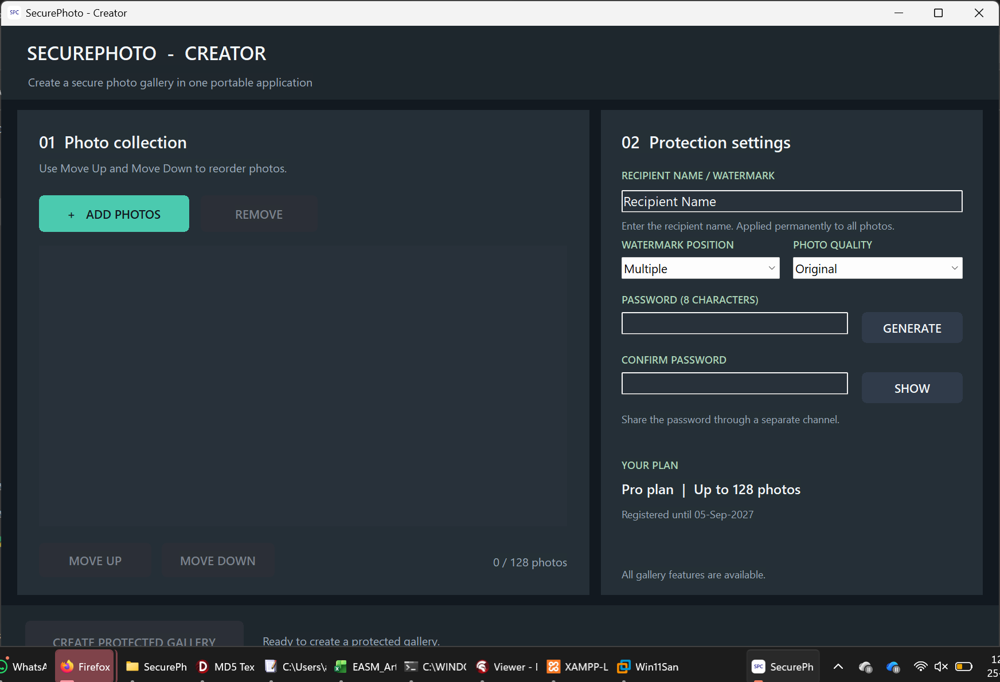
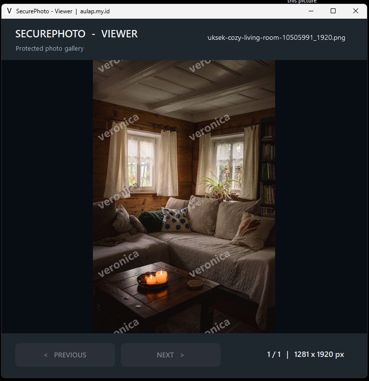

Bagikan foto tanpa membagikan file aslinya secara langsung
SecurePhoto adalah aplikasi Windows untuk membuat galeri foto terproteksi dengan
password, enkripsi, watermark personal, dan screenshot protection. Penerima hanya melihat
galeri yang dipublikasikan, sehingga foto asli tidak mudah dicopy, dicapture, atau digandakan
seperti saat mengirim file gambar biasa.
Versi: 1Sistem: Windows 10/11 (64-bit)Premium: Rp150.000/tahun
▣ Product Overview─ □ ×
Kenapa SecurePhoto berbeda?
Banyak orang mengirim foto langsung dalam format JPG atau PNG, lalu kehilangan kendali atas
file tersebut. File bisa disalin, diteruskan, diunggah ulang, atau dibuka bebas tanpa
perlindungan tambahan. SecurePhoto mengubah alur ini.
Dengan SecurePhoto, Anda membuat galeri terproteksi dalam bentuk
aplikasi viewer Windows. Foto ditampilkan melalui viewer, bukan dibagikan sebagai file asli
yang bebas diakses. Setiap galeri dapat dilindungi password, diberi watermark nama penerima,
dan dibatasi dari metode screenshot Windows yang didukung.
Cocok untuk
Fotografer yang mengirim preview kepada klien.
Tim marketing atau kreatif yang membagikan draft visual internal.
Pemilik konten yang ingin mengurangi risiko foto disalin atau didistribusikan ulang.
Dokumentasi pribadi yang ingin dibagikan secara lebih terkontrol.
Tampilan Aplikasi
Berikut tampilan SecurePhoto Creator dan SecurePhoto Viewer saat digunakan untuk membuat serta
membuka galeri foto terproteksi.
▣ SecurePhoto Creator─ □ ×

Creator · Atur foto, watermark, password, dan hasilkan galeri terproteksi
▣ SecurePhoto Viewer─ □ ×

Viewer · Penerima membuka galeri tanpa akses langsung ke file foto asli
Fitur Utama
SecurePhoto dirancang untuk memproteksi proses berbagi foto, bukan sekadar menyimpan gambar.
FEATURE 01
Foto Asli Tidak Dibagikan Langsung
Anda membagikan galeri hasil publikasi, bukan file foto mentah yang bebas disalin dari folder.
FEATURE 02
Screenshot Protection
Membantu mencegah screenshot dan screen recording melalui metode capture Windows yang didukung.
FEATURE 03
Password-Protected Gallery
Setiap galeri dapat diberi password agar hanya penerima yang memiliki akses dapat membukanya.
FEATURE 04
Personalized Watermark
Sisipkan nama penerima atau watermark khusus secara permanen ke seluruh foto sebelum dibagikan.
FEATURE 05
Encrypted Photo Package
Foto dalam galeri disimpan dalam format terlindungi untuk membatasi akses langsung ke kontennya.
FEATURE 06
Portable Viewer
Hasil galeri dipublikasikan sebagai satu file executable Windows yang dapat dibuka penerima tanpa instalasi tambahan.
FEATURE 07
Original & Compressed Quality
Pilih kualitas foto sesuai kebutuhan: detail tinggi untuk preview penting atau ukuran lebih ringan untuk distribusi cepat.
FEATURE 08
Multi Photo Gallery
Buat satu galeri berisi banyak foto untuk proyek, album klien, proofing, atau dokumentasi internal.
Keunggulan Utama untuk Pemilik Foto
Tidak mengirim file asli secara bebas seperti JPG atau PNG biasa.
Lebih sulit untuk dicapture dan disalin pada metode screenshot Windows yang didukung.
Setiap penerima bisa diberi watermark berbeda untuk membantu identifikasi jika file tersebar.
Penerima cukup membuka viewer tanpa harus memasang aplikasi tambahan.
Cocok untuk preview, proofing, dan distribusi terbatas sebelum penyerahan final.
Edisi & Harga
Pilih edisi sesuai kebutuhan. Free Edition cocok untuk mencoba dan penggunaan dasar, sedangkan Pro Lifetime ditujukan untuk penggunaan lebih serius dengan kapasitas lebih besar.
Kirim file hasil galeri kepada penerima dan bagikan password melalui jalur terpisah.
▣ System Requirements─ □ ×
Persyaratan sistem
Windows 10 atau Windows 11
RAM 4 GB atau lebih direkomendasikan
Ruang penyimpanan sesuai jumlah foto dan galeri yang dibuat
Tidak membutuhkan koneksi internet untuk membuat atau membuka galeri
Aktivasi Pro
Setelah pembelian, buka SecurePhoto lalu salin Hardware ID (HW ID). Kirim HW ID dan konfirmasi pembayaran melalui halaman Contact untuk proses aktivasi lisensi.
Pertanyaan Umum
Apakah penerima perlu menginstal SecurePhoto?
Tidak. Penerima cukup membuka file galeri executable yang Anda kirimkan.
Apakah foto asli bisa langsung dicopy dari galeri?
Galeri dirancang agar penerima melihat foto melalui viewer terproteksi, bukan menerima file foto mentah secara langsung. Ini membantu membatasi akses langsung ke file asli.
Apakah screenshot benar-benar bisa dicegah?
SecurePhoto membantu memblokir metode screenshot dan screen recording Windows yang didukung. Namun, tidak ada software yang dapat mencegah semua teknik perekaman, termasuk penggunaan kamera eksternal.
Apa perbedaan Free dan Pro?
Free Edition mendukung hingga 5 foto per galeri. Pro Lifetime mendukung hingga 128 foto per galeri dan unlimited gallery creation.
Apakah watermark diterapkan permanen?
Ya. Watermark ditanamkan ke foto sebelum galeri dipublikasikan, sehingga membantu identifikasi penerima.
Amankan foto sebelum dibagikan
Jika Anda ingin membagikan preview atau koleksi foto tanpa menyerahkan file asli secara langsung,
SecurePhoto adalah solusi yang lebih aman dan terkontrol.